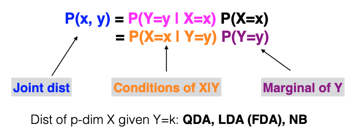

9.7. Summary
In Discriminant Analysis, we initially find the optimal decision rule for classification based on conditional probabilities. The approach in Discriminant Analysis is to estimate these probabilities by following a different factorization method. We estimate the margins of Y and the conditional distribution of X given Y and combine them to obtain the joint distribution. From this joint distribution, we can derive the marginal distribution. Depending on how we model the conditional distribution of X given Y, several Discriminant Analysis methods like Quadratic Discriminant Analysis (QDA), Linear Discriminant Analysis (LDA), or Naive Bayes can be employed.
{kind=link}
Discriminant Analysis is conceptually straightforward and is effective for low-dimensional problems, particularly QDA and LDA. However, it may not be the most efficient method for building classifiers. Let’s take a closer look at binary LDA, where k can take only two different values, and the discriminant function or decision function is a linear function of X with coefficients determined by \((\Sigma, \mu_k, \pi_k)\).
In binary classification, our main concern is the difference between \(d_1(x)\) and \(d_2(x)\), which is a linear function of \(x\):
So what truly matters is the linear function’s p-dimensional coefficient vector \(\boldsymbol{\beta}\), along with the intercept \(\beta_0\). However, LDA estimates these p + 1 parameters using a much larger collection of parameters, including a p-by-p covariance matrix \(\Sigma\), two p-dimensional vectors \(\mu_1\) and \(\mu_2\), and a mixing weight \(\pi_1\).
In the upcoming weeks, we’ll delve into methods that directly learn the conditional probability/decision boundary as a function of \(x\), such as logistic regression or tree models, which directly learn probabilities, or support vector machines (SVMs), which directly learn the decision boundary.